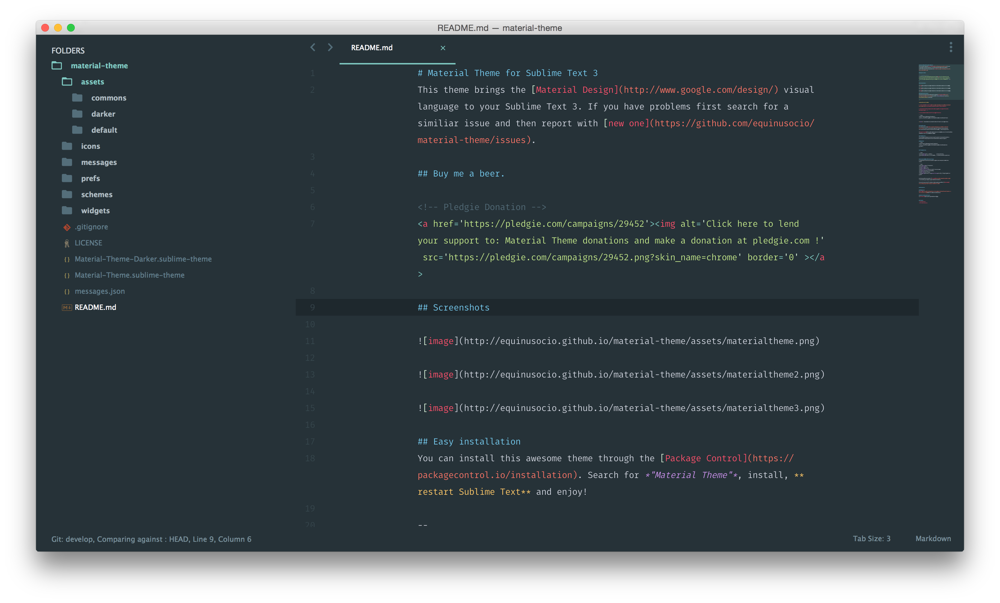

subl Shell命令设置
为了方便在终端直接用SublimeText打开我们的项目，为此可以设置一下Subl来软链接到实际的路径。
#bash shell
ln -s "/Applications/Sublime\ Text.app/Contents/SharedSupport/bin/subl" /usr/bin/subl
#zsh shell
alias subl="'/Applications/Sublime Text.app/Contents/SharedSupport/bin/subl'"
# 设置SublimeText为默认编辑器
export EDITOR="subl"
设置完之后需要执行下面代码将我们的设置生效:
#bash shell
source ~/.bash_profile
#zsh shell
source ~/.zshrc
这时候就可以在我们的项目里面执行下面代码直接用SublimeText打开项目：
subl .
# more help
subl help
编辑器配置
下面是我个人的一些配置，根据个人喜好可以进行修改：
# 修改配置路径： Sublime Text -> Preferences -> Settings-User
"always_show_minimap_viewport": true, #是否总是显示小地图
"draw_minimap_border": true, # 让minimap里的当前位置更显眼点.
"highlight_line": true, # 高亮当前行
"highlight_modified_tabs": true, # 修改了而尚未保存的 tab, 会用橘黄色显示
"ignored_packages":
[
"Vintage"
],
"show_encoding": true, # 显示文件编码
"show_full_path": true, # 标题栏上显示完整路径
"show_line_endings": true, # 文档到达底部会在最后一行
"open_files_in_new_window": false, # 在 Finder 里打开文件时, 不会新开窗口了
"translate_tabs_to_spaces": true #将tab键的形式转成空格
Package Control
SublimeText所有插件都依赖于Package Control，默认情况下Package Control没有自带的，需要手动安装，打开SublimeText之后在菜单栏的View -> show Console，将下面代码贴入控制台并回车。
SublimeText 3 版本
import urllib.request,os; pf = 'Package Control.sublime-package'; ipp = sublime.installed_packages_path();urllib.request.install_opener(urllib.request.build_opener( urllib.request.ProxyHandler()) );open(os.path.join(ipp, pf), 'wb').write(urllib.request.urlopen('http://sublime.wbond.net/' + pf.replace(' ','%20')).read())
SublimeText 2 版本
import urllib2,os; pf='Package Control.sublime-package'; ipp = sublime.installed_packages_path(); os.makedirs( ipp ) if not os.path.exists(ipp) else None; urllib2.install_opener( urllib2.build_opener( urllib2.ProxyHandler())); open( os.path.join( ipp, pf), 'wb' ).write( urllib2.urlopen('http://sublime.wbond.net/' +pf.replace( ' ','%20')).read()); print( 'Please restart Sublime Text to finish installation')
上面装完之后就可以command + shift + p，搜索需要安装的插件了。
推荐主题
强烈推荐Material Theme。
预览效果：

推荐插件
SublimeText的最大一个组成部分就是插件，个人觉得插件能够达到精简实用最好，下面推荐一些常用的插件，仅供参考。
# 下面插件的安装方法
shift + cmd + p 打开命令面板
输入 “Package Control: Install Package” 命令
输入 插件的名称 , 找到后回车安装
安装成功后在preferences中选择主题
- Emmet （前端工程师利器，各种代码补全自动生成，更多介绍移步 官方文档）
- converttoUTF8（文档转码工具）
- git（git的一些操作都可以在这里进行）
- sidebarenhancement（侧边栏增强，在侧边右键之后多了一些功能，挺实用的）
- docblockr（文档注释，输入
/*之后按一下tab就可以生成文档注释） - Bracket Highlighter（匹配括号高亮，自带的感觉高亮不强）
- SCSS（sass高亮）
- markdownPerview（写markdown可以
command+b直接生成html预览） - evernote（配合markdownPerview就可以写markdown同步到evernote去了）